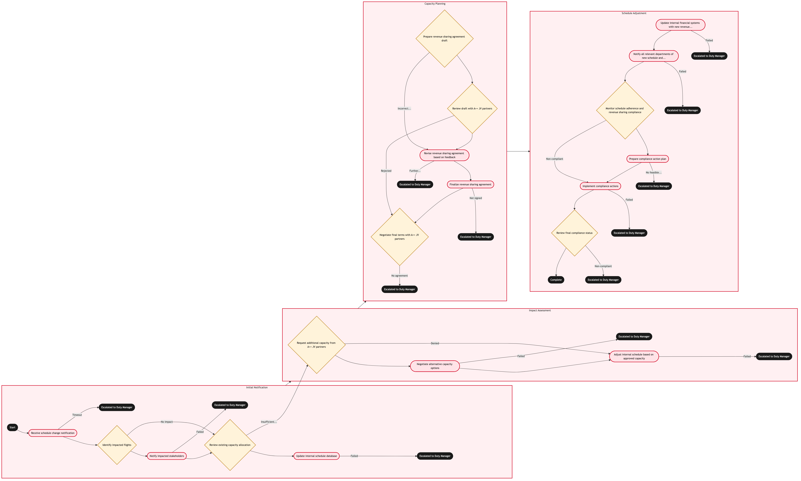

Updated 2026-08-20
A Plus Plus Atlantic Joint Venture Schedule Alignment
Process flow
Click to zoom

Process steps
▼
Phase 1 — Initial Notification
5 steps
| Step | Activity | Role | System | Input | Output | KPI | Dec | Exc | Pain point |
|---|---|---|---|---|---|---|---|---|---|
| 1.1 | Receive schedule change notification | Network Planning Analyst | Lufthansa Systems NetLineB | Notification from A++ JV partner | Updated schedule data | Schedule update response time: <2 hours | N | Y | Delays in receiving notifications can disrupt initial planning. |
| 1.2 | Identify impacted flights | Network Planning Analyst | Lufthansa Systems NetLineB | Updated schedule data | List of affected flights | Identification accuracy: 95% | Y | N | Manual identification can lead to errors. |
| 1.3 | Notify impacted stakeholders | Network Planning Analyst | Lufthansa Systems NetLineB | List of affected flights | Stakeholder notifications | Notification completeness: 100% | N | Y | Missing stakeholder communications can cause coordination issues. |
| 1.4 | Review existing capacity allocation | Network Planning Analyst | Lufthansa Systems NetLineB | Affected flights list | Capacity allocation report | Allocation review time: <1 hour | Y | N | Inconsistent data can lead to incorrect allocations. |
| 1.5 | Update internal schedule database | Network Planning Analyst | Lufthansa Systems NetLineB | Capacity allocation report | Updated schedule in NetLine | Database update accuracy: 98% | N | Y | Database errors can propagate through the system. |
▼
Phase 2 — Impact Assessment
3 steps
| Step | Activity | Role | System | Input | Output | KPI | Dec | Exc | Pain point |
|---|---|---|---|---|---|---|---|---|---|
| 2.1 | Request additional capacity from A++ JV partners | Network Planning Analyst | A++ Atlantic Joint VentureA | Capacity allocation report | Capacity approval or denial | Capacity request response time: <48 hours | Y | N | Partner availability and cooperation can be inconsistent. |
| 2.2 | Negotiate alternative capacity options | Network Planning Analyst | A++ Atlantic Joint VentureA | Capacity approval or denial | Agreed capacity allocation | Negotiation success rate: 85% | N | Y | Negotiations can take longer than expected. |
| 2.3 | Adjust internal schedule based on approved capacity | Network Planning Analyst | Lufthansa Systems NetLineB | Agreed capacity allocation | Adjusted schedule in NetLine | Schedule adjustment accuracy: 97% | N | Y | Manual adjustments can introduce errors. |
▼
Phase 3 — Capacity Planning
5 steps
| Step | Activity | Role | System | Input | Output | KPI | Dec | Exc | Pain point |
|---|---|---|---|---|---|---|---|---|---|
| 3.1 | Prepare revenue sharing agreement draft | Revenue Management Analyst | A++ Atlantic Joint VentureA | Adjusted schedule | Draft of revenue sharing agreement | Agreement preparation time: <24 hours | Y | N | Complex revenue calculations can be prone to errors. |
| 3.2 | Review draft with A++ JV partners | Revenue Management Analyst | A++ Atlantic Joint VentureA | Draft of revenue sharing agreement | Partner feedback or approval | Feedback response time: <48 hours | Y | N | Partner feedback can be delayed. |
| 3.3 | Revise revenue sharing agreement based on feedback | Revenue Management Analyst | A++ Atlantic Joint VentureA | Partner feedback | Revised draft of revenue sharing agreement | Revision accuracy: 90% | N | Y | Multiple revisions can extend the process. |
| 3.4 | Finalize revenue sharing agreement | Revenue Management Analyst | A++ Atlantic Joint VentureA | Revised draft of revenue sharing agreement | Signed revenue sharing agreement | Agreement signing time: <2 days | N | Y | Signing delays can cause operational disruptions. |
| 3.5 | Negotiate final terms with A++ JV partners | Revenue Management Analyst | A++ Atlantic Joint VentureA | Partner rejection | Agreed revenue sharing agreement | Final negotiation success rate: 80% | Y | N | Final negotiations can be contentious. |
▼
Phase 4 — Schedule Adjustment
6 steps
| Step | Activity | Role | System | Input | Output | KPI | Dec | Exc | Pain point |
|---|---|---|---|---|---|---|---|---|---|
| 4.1 | Update internal financial systems with new revenue sharing terms | Financial Analyst | A++ Atlantic Joint VentureA | Signed revenue sharing agreement | Updated financial records | System update accuracy: 95% | N | Y | Integration issues can cause data discrepancies. |
| 4.2 | Notify all relevant departments of new schedule and revenue terms | Network Planning Analyst | Lufthansa Systems NetLineB | Updated financial records | Department notifications | Notification completeness: 100% | N | Y | Incomplete notifications can lead to operational confusion. |
| 4.3 | Monitor schedule adherence and revenue sharing compliance | Network Planning Analyst | Lufthansa Systems NetLineB | Updated schedule and financial records | Compliance report | Adherence rate: 90% | Y | N | Non-compliance can lead to financial losses. |
| 4.4 | Prepare compliance action plan | Network Planning Analyst | Lufthansa Systems NetLineB | Compliance report | Action plan | Plan preparation time: <1 week | N | Y | Creating a detailed plan can be resource-intensive. |
| 4.5 | Implement compliance actions | Network Planning Analyst | Lufthansa Systems NetLineB | Action plan | Compliance status update | Implementation success rate: 85% | N | Y | Actions may not resolve the issue immediately. |
| 4.6 | Review final compliance status | Network Planning Analyst | Lufthansa Systems NetLineB | Compliance status update | Final compliance report | Final adherence rate: 92% | Y | N | Recurring non-compliance can erode trust. |
Swim lanes
Network Planning Analyst1.1 1.2 1.3 1.4 1.5 2.1 2.2 2.3 4.2 4.3 4.4 4.5 4.6
Revenue Management Analyst3.1 3.2 3.3 3.4 3.5
Financial Analyst4.1
Systems touched
Lufthansa Systems NetLineBA++ Atlantic Joint VentureA
Key performance indicators
- Schedule update response time: <2 hours
- Identification accuracy: 95%
- Notification completeness: 100%
- Allocation review time: <1 hour
- Database update accuracy: 98%
Risks and control points
- Delays in receiving notifications from A++ JV partners.
- Inconsistent data leading to incorrect capacity allocations.
- Partner availability and cooperation issues affecting capacity requests.
- Errors in revenue calculations causing agreement discrepancies.
- Signing delays leading to operational disruptions.
Air Canada Process Wiki — process and systems reference compiled from public sources
for IT Application Management and User Support pre-sales discovery.
Built 2026-08-21. Every system carries an evidence tier: tier C is an industry pattern and tier U is an open
question, and neither should be asserted as fact about Air Canada without confirmation in discovery.
Not affiliated with or endorsed by Air Canada. Air Canada, Aeroplan and Altitude are trademarks of Air Canada.